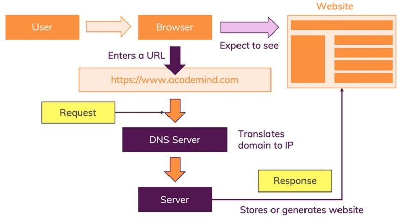

Fundamentals
What is the Web?
The Web is the common name for the World Wide Web, a subset of the Internet consisting of the pages that can be accessed by a Web browser. Many people assume that the Web is the same as the Internet, and use these terms interchangeably. However, the term Internet actually refers to the global network of servers that makes the information sharing that happens over the Web possible. So, although the Web does make up a large portion of the Internet, but they are not one and same.
Web pages are formatted in a language called Hypertext Markup Language (HTML). It this language that allows users to click through pages on the Web via links. The Web uses HTTP protocol to transmit data and share information. Browsers such as Internet Explorer, Google Chrome or Mozilla Firefox are used to access Web documents, or Web pages, which are connected via links. The Web is just one of the ways that information is shared over the Internet; others include email, instant messaging and File Transfer Protocol (FTP).
What is a Website?
It is a set of related web pages located under a single domain name, typically produced by a single person or organization

How does a Website Work?
When you type an address in the web browser:
- The URL gets resolved.
- A Request is sent to the server of the website.
- The response of the server is parsed.
- The page is rendered and displayed.
An IP address typically looks like this: 172.56.180.5 You can find the IP address of a website by typing in the terminal:
ping www.apple.com
ping google.com
For a detailed explanation: https://academind.com/tutorials/how-the-web-works
What is a Web Page?
- A Web page is a document for the World Wide Web that is identified by a unique uniform resource locator (URL).
- A Web page is a representation of a document that is actually located at a remote site.
- Web pages are delivered by a web server to the user and displayed in a web browser.
- A website consists of many web pages linked together under a common domain name
What is a HTML?
HTML DefinitionWhat Does Hypertext Markup Language (HTML) Mean?
Hypertext markup language (HTML) is the major markup language used to display Web pages on the Internet. In other words, Web pages are composed of HTML, which is used to display text, images or other resources through a Web browser. All HTML is plain text, meaning it is not compiled and may be read by humans. The file extension for an HTML file is .htm or .html.